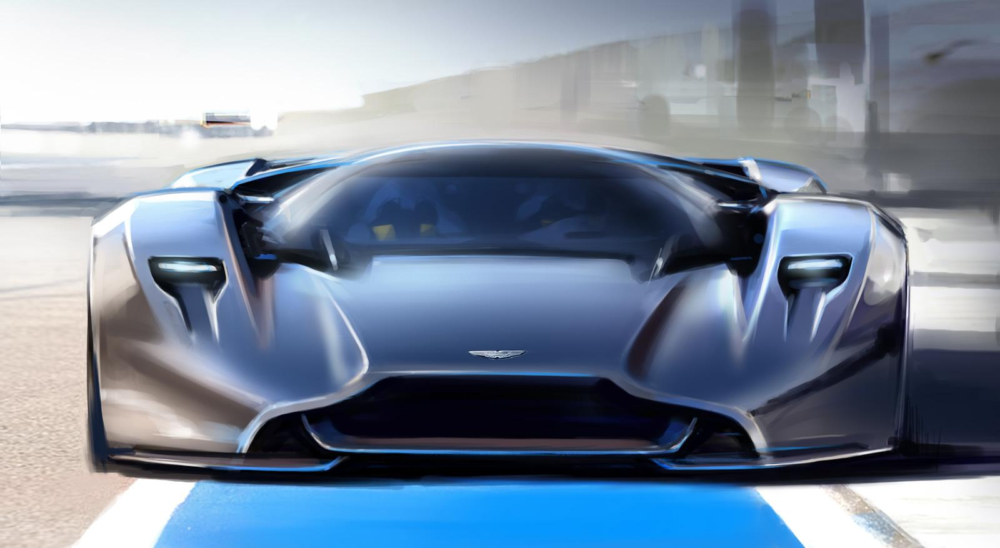
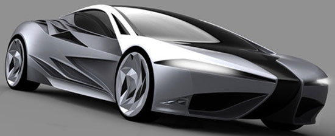
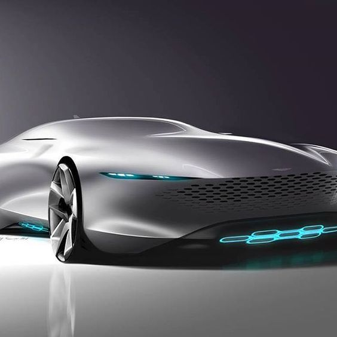
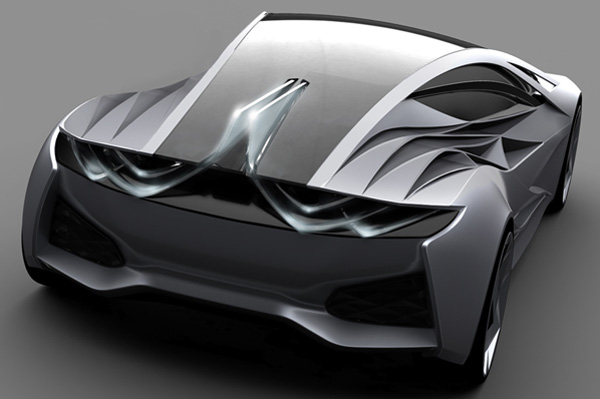
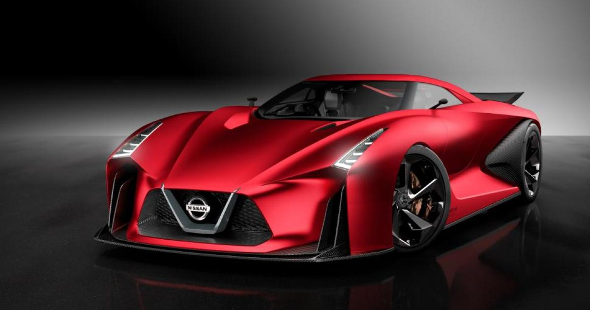
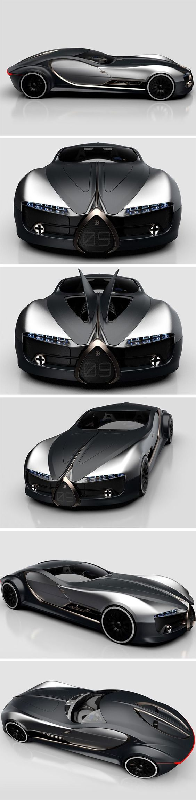

Car Designs
Fancy Cars
1) Photo of Aston Martin DP-100 Vision Gran Turismo 123342.
 2) “This car will act like a visual perfume.†Of all the descriptions for projects that I have come across, calling a vehicle ‘visual perfume’ has to be the first. However I do agree with Janina, the refractive effect of the car looks to be mesmerizing and poetic. Inspired by the prism, the car refracts and divides ‘white light’ into its DNA colors, red green and blue; to create a stunning illusion of colors. A set of wheels as flashy as this, who needs anything else on the autobahn.
3) 2017 Aston Martin Vantage Specs
4) NISSAN concept 2020 Vision Gran Turismo
5) Bugatti Type 57 T Concept